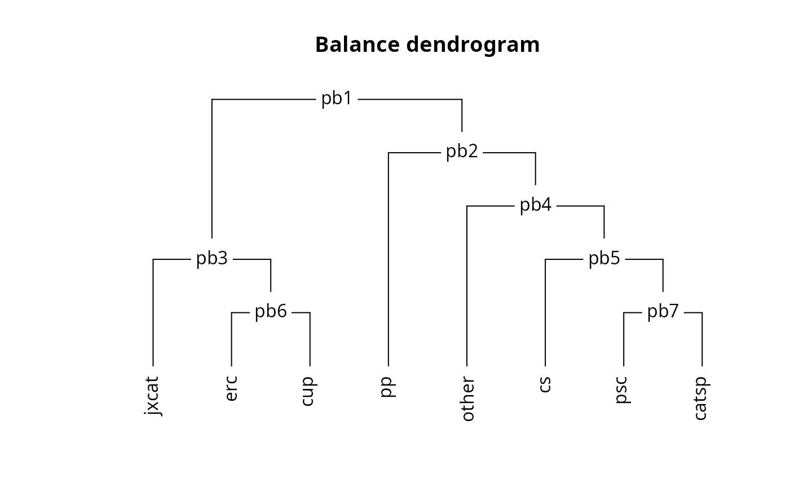

Principal Balances
Marc Comas-Cufí
2025-05-03
Source:vignettes/principal_balances.Rmd
principal_balances.RmdPrincipal balances are defined as follows (Pawlowsky-Glahn, Egozcue, and Tolosan-Delgado 2011):
Given an -sample of a -part random composition, the set of Principal Balances (PB) is a set of balances satisfying the following conditions:
- Each sample PB is obtained as the projection of a sample composition on a unitary composition or balancing element associated to the PB.
- The first PB is the balance with maximum sample variance.
- The -th PB has maximum variance conditional to its balancing element being orthogonal to the previous 1st, 2nd, …, -th balancing elements.
Because of the large number of possibilities, for a given
compositional sample, finding the PB is a computational demanding task.
Martín-Fernández et al. (2017) proposed
different approaches to deal with the calculation and approximation of
such type of basis. coda.base implements all methods
presented in (Martín-Fernández et al.
2017).
To illustrate coda.base functionalities, we use the
following dataset:
library(coda.base)
#>
#> Attaching package: 'coda.base'
#> The following object is masked from 'package:stats':
#>
#> dist
X = parliament2017[,-1]consisting of parties in the 2017 Catalan Parliament Elections.
Exact Principal Balances
coda.base can calculate the PB with the function
pb_basis(). Function pb_basis() needs the
parameter method to be set. To obtain the PB users needs to
set method = "exact".
B1 = pb_basis(X, method = "exact")Where the obtained sequential binary partition can be summarized with the following sequential binary tree:
plot_balance(B1)
apply(coordinates(X, B1), 2, var)
#> pb1 pb2 pb3 pb4 pb5 pb6 pb7
#> 0.663216 0.085733 0.046135 0.044113 0.032890 0.028590 0.008179When method is set to "exact", exhaustive
search is performed to obtain the PB. The time needed to calculate the
PB grows exponentially regarding the number of parts of X.
To iterate through all the possibilities, CoDaPack uses the algorithm
Ruskey (1993). Currently, exhaustive
search can find the PB of a compositional data set with 20 parts in a
reasonable amount of time (5 minutes approximately).

When the number of part is higher, the exact method should be discarded in favor of other alternatives. Different alternatives are available in Pawlowsky-Glahn, Egozcue, and Tolosan-Delgado (2011) and Martín-Fernández et al. (2017). Between these alternatives, the once that can be implemented are agglomerate partition approach based on the Ward method Martín-Fernández et al. (2017) and the approximation based on a reduced approximation to the principal components (Martín-Fernández et al. 2017).
Ward Method for Parts
For a composition , Pawlowsky-Glahn, Egozcue, and Tolosan-Delgado (2011) proposed to build the variation array and use it to produce a matrix distance. The variation array calculates the variance between a pair of logratios.
D = as.dist(variation_array(X))
D
#> cs jxcat erc psc catsp cup pp
#> jxcat 0.62079
#> erc 0.39636 0.08823
#> psc 0.04887 0.53876 0.29338
#> catsp 0.06682 0.54951 0.29768 0.01636
#> cup 0.48118 0.07179 0.05809 0.36163 0.35432
#> pp 0.12424 0.40944 0.20351 0.10318 0.14361 0.32193
#> other 0.07018 0.56344 0.36363 0.07197 0.07462 0.37428 0.20308Combining pairs with lower variance, it is expected to get a final merging with high variability.
B2 = pb_basis(X, method = 'cluster')
plot_balance(B2)
apply(coordinates(X, B2), 2, var)
#> pb1 pb2 pb3 pb4 pb5 pb6 pb7
#> 0.651569 0.097381 0.043659 0.043188 0.035838 0.029044 0.008179Constrained PCs Algorithm
B3 = pb_basis(X, method = 'constrained')
plot_balance(B3)
apply(coordinates(X, B3), 2, var)
#> pb1 pb2 pb3 pb4 pb5 pb6 pb7
#> 0.663216 0.085733 0.046135 0.044113 0.032890 0.028590 0.008179